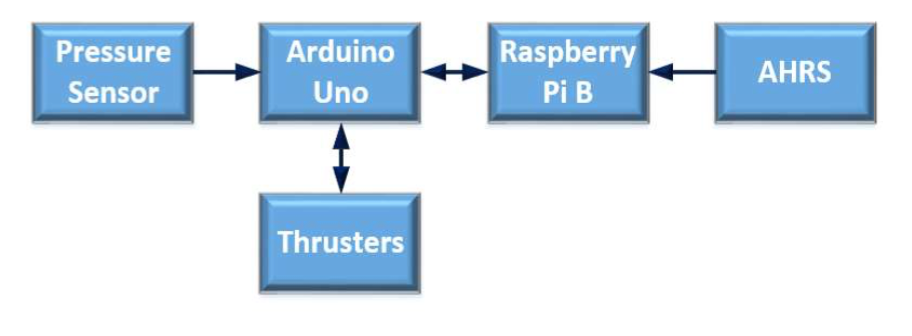

Ula is programed to gather information about the sub and it’s surround through the various sensors.
It then synthesizes and analyzes the data to determine the AUV’s next procedure to complete the task at hand.
Lastly, information is sent to the thrusters to carry out the necessary adjustments to Ula’s position.
The software is distributed across several microcontrollers. Continuous data from the sensors is received by the Arduino Uno microcontrollers. As data is received, the Arduinos output this data to the Raspberry Pis. For example, the Arduino connected to the thrusters passes incoming data from the Raspberry Pis to each thruster.
The Raspberry Pis compare video footage from the two cameras and run it through Open CV, an open-source image processing library. This is then passed to the second Raspberry Pi which stores all microcontroller data. This Raspberry Pi analyzes the data and determines which task should be performed.
The Raspberry Pi B and Arduino Uno are responsible for controlling the thrusters. The transfer of data is depicted below:

The sensor collects and sends data regarding the surroundings to the Arduino Uno. Through USB connection, the Raspberry Pi and Arduino exchange data as the Raspberry Pi utilizes Python 2.7 to interpret it and determine an action to return to the Arduino Uno. The Arduino then passes the command the the thrusters to result in vertical movement.
The thrusters send information regarding their temperature, speed, current, and voltage usage to the Raspberry Pi B to log the data. This allows for real time readjustment.
The AHRS passes information regarding the vehicle’s orientation so the Raspberry Pi can analyze the data and send information to the thrusters regarding horizontal movement.
Two Logitech HD Webcam c270 cameras, one facing forwards, the other facing downwards, provide information for navigation and target tracking. Using Intel’s Open CV 2.4 Library, real time target tracking is possible through color detection. First, the frame is downsized to increase the number of frames per second. Then, in order to reduce the noise from high frequencies, it is then blurred to focus on the objects inside the 600px width. Lastly, a conversion from frame to HVS color space is done. This allows Ula to determine color and distance.